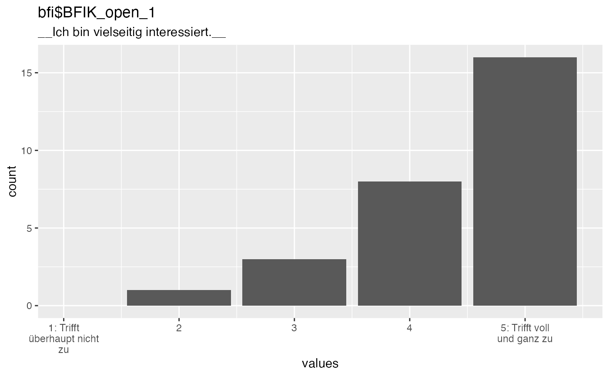

Plot a labelled vector, making use of the variable name, label and value labels to make the plot more readable. This function also works for other vectors, but provides little benefit.
Usage
plot_labelled(
item,
item_name = NULL,
wrap_at = 70,
go_vertical = FALSE,
trans = "identity",
x_axis_label = "values"
)Arguments
- item
a vector
- item_name
item name, defaults to name of first argument
- wrap_at
the subtitle (the label) will be wrapped at this number of characters
- go_vertical
defaults to FALSE. Whether to show choices on the Y axis instead.
- trans
defaults to "identity" passed to
ggplot2::scale_x_continuous()- x_axis_label
defaults to "values"
Examples
data("bfi", package = "codebook")
plot_labelled(bfi$BFIK_open_1)
